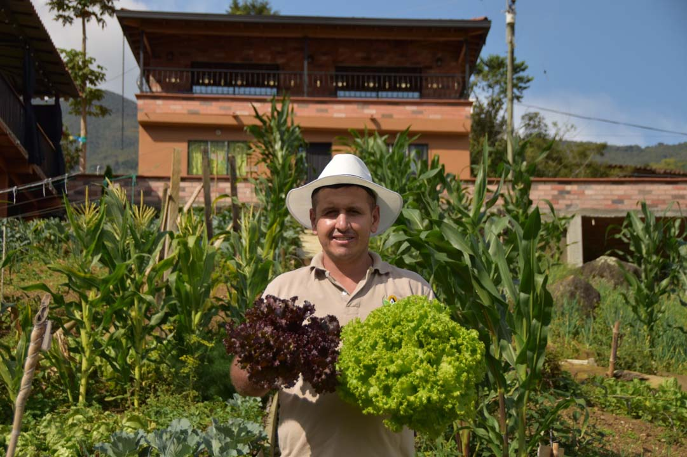

Tradiciones Antioqueñas
Los Silleteros
Los silleteros son campesinos que durante generaciones han transportado flores en silletas (estructuras de madera) en sus espaldas. Hoy es un símbolo cultural que se exhibe en desfiles como el de la Feria de las Flores.
Conocer más
Música Carranguera
Los sonidos del tiple, la bandola y la guitarra acompañan las historias campesinas en esta música típica. Artistas como el dúo musical de Los Tolimenses la popularizaron.
Conocer más
Artesanías en Fique
El fique es una fibra vegetal con la que se elaboran alpargatas, bolsos y otros objetos utilitarios. Es una tradición que pasa de generación en generación.
Conocer másGastronomía Típica

Bandeja Paisa
Plato insignia compuesto por fríjoles, arroz, carne molida, chicharrón, chorizo, huevo frito, aguacate, arepa y plátano maduro. Un festín de sabores que representa la abundancia campesina.
Conocer másArepa Antioqueña
Las arepas de maíz blanco, hechas a mano y cocinadas en fogón de leña, son el acompañamiento infaltable en cualquier comida. Algunas llevan queso o mantequilla.
Conocer másNatilla y Buñuelos
Dulce tradicional de navidad pero que se disfruta todo el año. La natilla es un postre de maíz con panela y los buñuelos son bolas fritas de harina de maíz y queso.
Conocer másVestuario Tradicional
Vestuario Masculino
El atuendo típico del hombre paisa incluye ruana de lana, sombrero aguadeño, carriel (bolso de cuero), camisa blanca, pantalón negro y alpargatas de fique.
Conocer másVestuario Femenino
La mujer antioqueña tradicional viste blusa blanca bordada, falda larga de colores vivos, pañolón (chal de lana), alpargatas y sombrero aguadeño.
Conocer másBailes Típicos
En festividades y eventos culturales se aprecian bailes como el pasillo, el bambuco y la danza del sombrero, donde los trajes típicos son protagonistas.
Conocer másEventos Culturales
Feria de las Flores
Agosto 1-10
El evento más emblemático con el Desfile de Silleteros, Tablados Musicales y Exposición de Orquídeas.
Festival Nacional de la Trova
Agosto 15-18
En Santa Fe de Antioquia, poetas improvisan versos humorísticos acompañados de música típica.

Día del Campesino
Agosto 20
Celebración en municipios rurales con muestras de artesanías, comidas y concursos de labores campesinas.
Festival del Río
Agosto 25-30
En Puerto Triunfo, celebración de la cultura mazamorrera con deportes acuáticos y conciertos.

Datos Curiosos
¿Sabías que...?
La palabra "paisa" viene de "paisano" y originalmente se refería a los habitantes de la región montañosa de Antioquia, Caldas, Risaralda y Quindío.
Dato Histórico
Antioquia fue cuna de la colonización antioqueña, movimiento migratorio del siglo XIX que pobló el occidente colombiano.
Expresión Típica
"¡Aura pues!" es una expresión muy paisa que puede significar desde un saludo hasta indicar que algo es evidente.